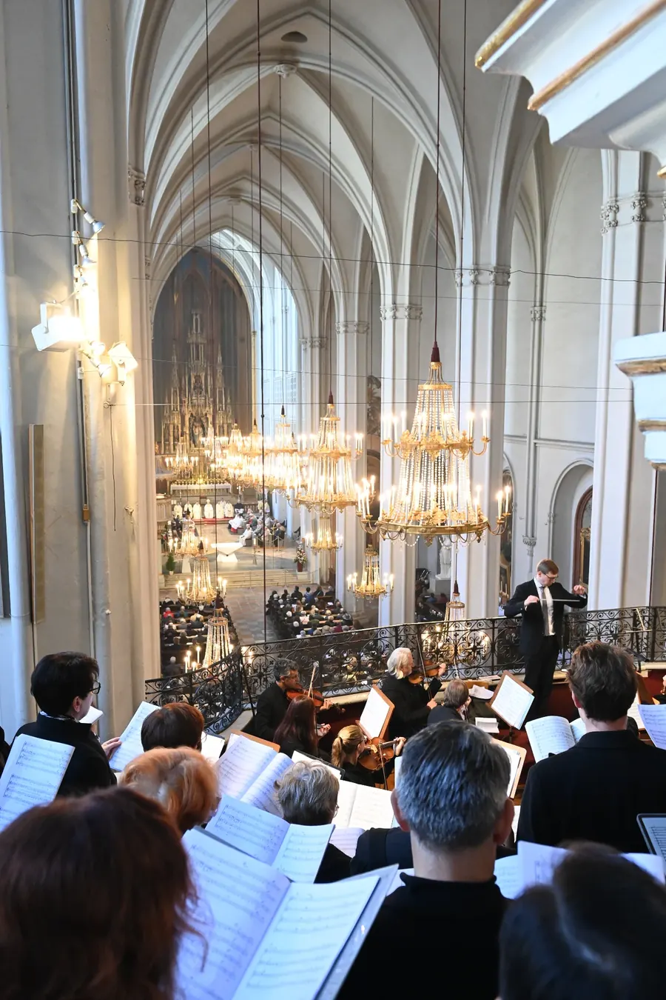

Parroquia y Convento de San Agustín
Iglesia de los Agustinos de Viena
La iglesia parroquial de la corte de los Habsburgo, en el corazón del palacio de la Hofburg de Viena. Un lugar de oración, de música sacra y de comunidad.
- Encontrará todas las celebraciones en Horario de misas.
Descubra
La iglesia, su música y los frailes agustinos.



Viva la música sacra
Próximas misas solemnes
Cada domingo y día festivo a las 11:00 h, con el coro, los solistas y la orquesta de San Agustín, una de las grandes tradiciones de música sacra de Viena.
Encontrará las próximas misas solemnes en Música sacra, misas solemnes.
Apoyar
Ayúdenos a mantener viva la música
La música sacra de San Agustín depende de las personas que la apoyan. Con un padrinazgo o un donativo hace posibles las misas solemnes con coro, solistas y orquesta.
Accesos rápidos
Las páginas más visitadas de un vistazo, con todo lo disponible en español a continuación.
Horario de misas
Misas solemnes
Visitas guiadas
Cripta de los Corazones
Recorrido por la iglesia
Contacto